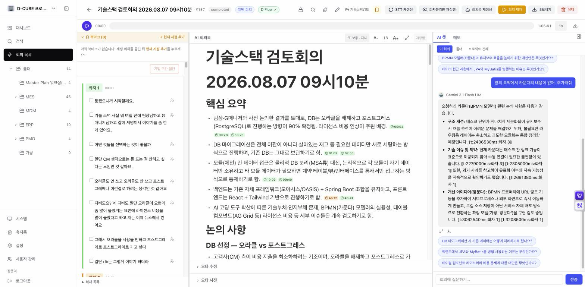
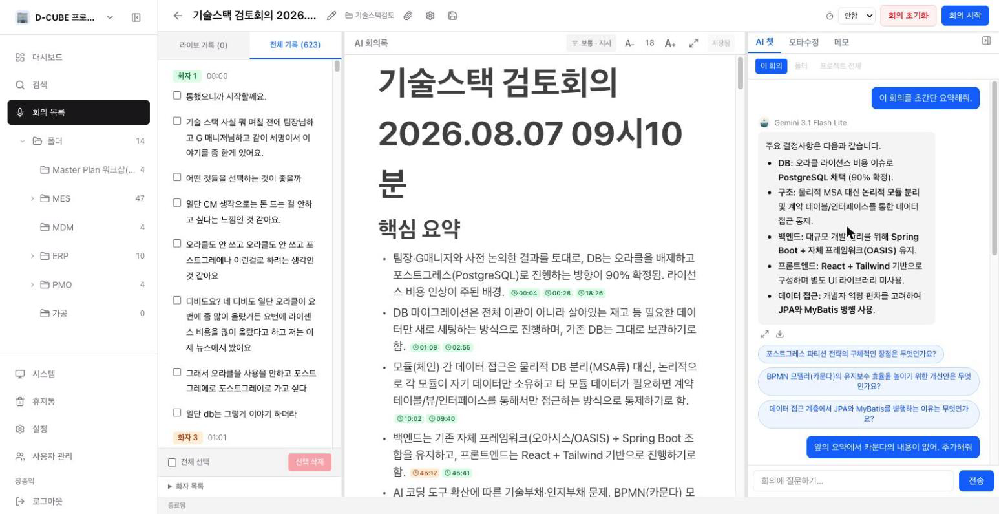
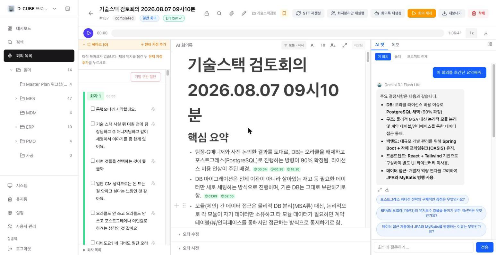
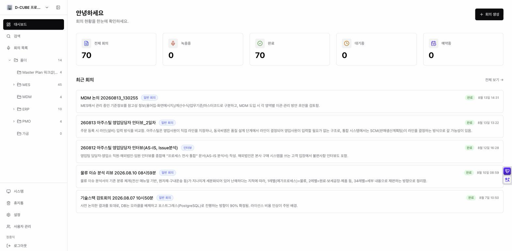
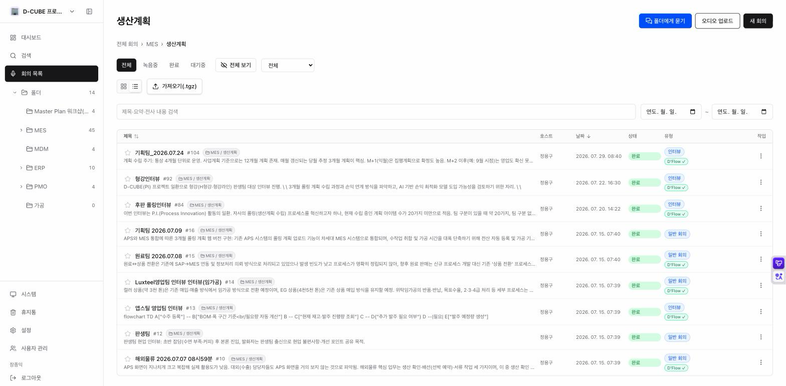
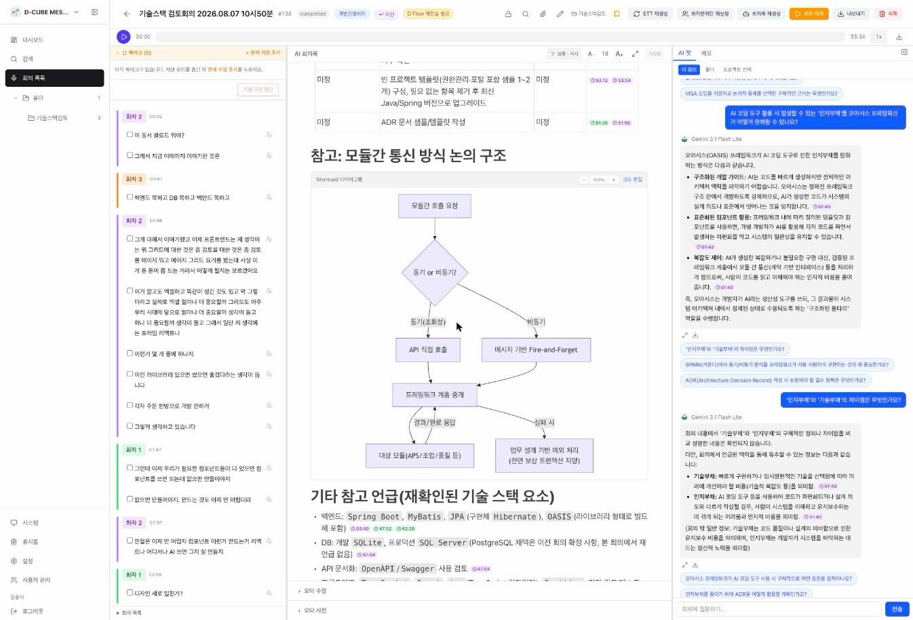
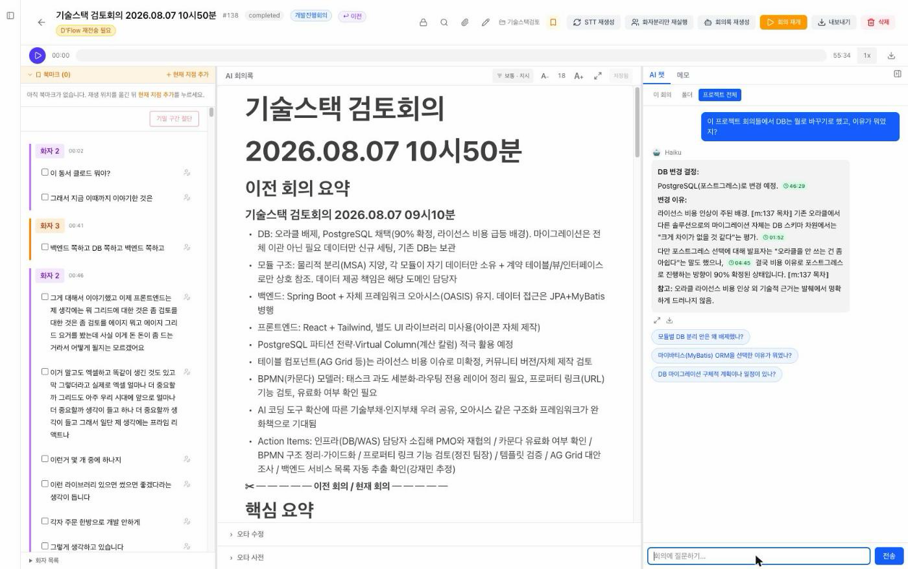
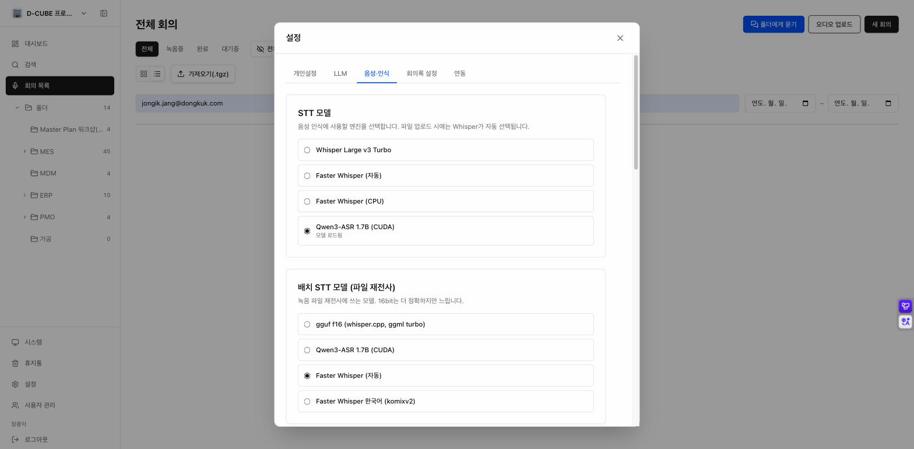

회의에 집중하세요.
기록은 또박또박이 합니다.
회의는 늘어나는데, 정확한 기록을 클라우드에 맡기자니 불안합니다. 또박또박은 전부 우리 서버 안에서 끝냅니다. 회의 음성을 실시간으로 받아쓰고, AI가 핵심 요약·결정사항·할 일까지 정리합니다.

모든 데이터 로컬
음성·전사·요약 전체가 팀 서버나 내 기기 안에만 머뭅니다. 외부 클라우드로 한 글자도 나가지 않습니다.
근거를 클릭하면 그 순간으로
요약·답변 문장마다 발화 시각과 화자가 붙습니다. 누르면 원본 오디오의 바로 그 지점으로 점프합니다.
여러 회의를 넘나들며 질문
한 회의를 넘어 폴더·프로젝트 전체에 묻습니다. 의미 검색으로 답을 찾고 해당 회의로 이동합니다.
팀 단위로 쌓는 회의록
개인 도구와 달리 프로젝트·폴더로 회의록을 한곳에 모으고, 멤버 초대와 협업자 권한으로 함께 봅니다.
녹음 버튼 하나로, 회의록까지.
한 번의 녹음이 자막이 되고, 구조화된 회의록을 거쳐, 검색되는 팀 자산으로 남습니다.
말하면 자막이 됩니다
마이크와 시스템 오디오를 동시에 담아 실시간으로 받아씁니다. 9개 언어를 인식하고 화자를 자동으로 구분합니다.
AI가 정리합니다
설정한 주기마다 대화를 핵심 요약·논의·결정·할 일로 구조화합니다. 개발진행·스탠드업·인터뷰 등 회의 유형별 양식을 따릅니다.
검색하고 공유합니다
전사·요약을 전역 검색으로 찾고, 회의에 직접 질문하고, 내보내기와 D'Flow 연동으로 팀과 나눕니다.
받아쓰기가 아니라, 읽기 좋은 회의록.
실제 화면 그대로입니다. 녹음하는 동안 회의록이 만들어지고, 끝나면 바로 찾고 나눌 수 있습니다.
말하는 동안 회의록이 완성됩니다
화면 왼쪽엔 실시간 자막과 화자, 가운데엔 AI 회의록, 오른쪽엔 AI 챗과 메모가 자리 잡습니다. 회의를 멈추지 않아도 기록은 계속 채워집니다.
- 실시간 자막과 화자 구분을 한 화면에서
- 설정한 주기로 핵심 요약·논의·결정 자동 갱신
- 메모와 AI 피드백으로 즉석에서 다듬기

모든 문장에 ‘언제, 누가’가 붙습니다
AI가 지어낸 말인지 헷갈릴 일이 없습니다. 요약 옆 인용을 누르면 그 말이 나온 순간으로 정확히 이동합니다.
- 요약·답변 문장마다 발화 시각·화자 인용
- 인용 클릭 시 원본 오디오의 해당 지점으로 점프
- 잘못 들은 용어는 오타 수정·교정 규칙으로 한 번에 바로잡기
- 화자 분리가 틀려도 행 단위로 직접 되돌리기

오늘의 회의를 한 화면에
전체·녹음 중·완료·대기 건수를 한눈에. 카드를 누르면 바로 그 상태의 목록으로 들어갑니다.
- 상태별 건수와 최근 회의를 요약해서 표시
- 예약 회의와 놓친 회의를 배너로 알림
- 카드를 클릭하면 필터링된 목록으로 곧장 이동

프로젝트와 폴더로 회의를 자산화
흩어진 녹음이 아니라 검색 가능한 팀 기록으로. 카드와 리스트, 태그와 폴더로 차곡차곡 정리됩니다.
- 카드/리스트 뷰, 상태·날짜·최근 3일 퀵필터와 검색
- 프로젝트 즐겨찾기와 멤버 초대, 폴더 가시성 관리
- 회의·폴더·프로젝트를 통째로 내보내고 가져오기 — 데이터가 특정 벤더에 갇히지 않습니다

말로 풀면 길어지는 구조, 그림 한 장으로.
결정사항과 할 일은 표로 정리하고, 얽힌 논의 구조는 AI가 Mermaid 다이어그램으로 그려 회의록에 바로 삽입합니다.
- 결정사항 · Action Items를 표로 자동 정리
- 흐름도·마인드맵 등 논의 구조를 자동 도식화
- 회의록 안에서 바로 렌더링 — 줌·코드 편집 지원
- AI 챗 답변에서도 다이어그램 생성

다시 듣지 말고, 회의록에 물어보세요.
모든 전사와 요약은 저장되는 순간 한국어 특화 임베딩(KURE)으로 벡터화됩니다. 정확한 단어가 기억나지 않아도 의미로 찾아내고, AI가 근거를 붙여 답합니다. 전부 우리 서버 안에서 이뤄집니다.
- 의미로 찾습니다. 키워드 검색과 벡터 의미검색을 함께 쓰고, LLM이 질문을 여러 검색어로 확장해 놓친 발화까지 끌어옵니다.
- 범위를 골라 묻습니다. 한 회의부터 폴더·프로젝트 전체까지. "DB는 왜 바꿨지?" 한 줄이면 여러 회의를 넘나들며 답이 옵니다.
- 답변마다 근거가 붙습니다. 발화 시각·화자 인용을 누르면 그 순간으로, 다른 회의 인용은 그 회의로 이동합니다.
- 대화가 이어집니다. 후속 질문 제안, 답변 확대보기와 Markdown 저장까지.

조직이 안심하는 네 가지 이유.
보안 심사, 데이터 삭제 요구, 벤더 종속, AI 공급사 리스크. IT 의사결정자라면 꼭 묻는 질문들입니다. 말이 아니라 기능으로 답을 준비했습니다.
보안 심사, 어렵지 않습니다
음성 인식부터 요약까지 사내 서버·개인 기기 안에서 완결됩니다. 인터넷이 끊겨도 로컬 LLM과 온디바이스 STT(Android)로 계속 동작합니다.
기밀 발언은 비가역 파기
실수로 녹음된 민감 발언은 전사뿐 아니라 원본 오디오까지 되돌릴 수 없게 파기합니다. 삭제해 달라고 하면, 정말 삭제됩니다.
협업자는 읽기 전용으로 제한하고, 회의 잠금·단일 기기 잠금으로 접근을 통제합니다.
락인 없는 데이터
회의·폴더·프로젝트를 통째로 .tgz로 백업·이관하고, 요약은 zip으로 일괄 내보냅니다. 데이터가 특정 벤더에 갇히지 않습니다.
AI 공급사에 휘둘리지 않는 LLM
프리셋 여러 개를 등록해두고 상황에 맞게 전환하거나, API 키 없이 CLI로 돌리거나, 아예 내부망 로컬 LLM으로 바꿔 씁니다. 가격이 오르거나 정책이 바뀌어도 끌려다니지 않습니다.
별도 DB 서버 없이 SQLite 하나로 돌고, 데스크톱 앱 설치만으로 오늘 바로 파일럿을 시작할 수 있습니다.
회의 전·중·후를 빠짐없이 챙깁니다.
녹음과 받아쓰기부터 정리·검색·공유·관리까지. 필요한 만큼만 켜서 씁니다.
녹음 · STT
- 실시간 음성 인식, VAD 무음 스킵
- 끊긴 여러 녹음을 이어서 하나의 회의록으로
- 화상회의 상대방 목소리까지 함께 녹음(macOS/Windows 네이티브 시스템 오디오)
- 페이지 어디에나 드래그앤드롭 업로드 · 9개 언어 인식
AI 회의록 · 요약
- 핵심·논의·결정·할 일 구조화
- 회의 유형별 양식, 압축률 5단계
- 연결회의: 이전 요약 상단 고정
- 결정·할 일 표 + Mermaid 자동 도식화
- 자연어 피드백으로 회의록 수정
화자 분리
- 발화자 자동 구분, 회의별 화자 인식
- 화자 이름 인라인 편집
- 행 단위 화자 변경 · 발언 분할
- 화자 분리만 다시 실행
AI 챗
- 회의에 질문, 실시간 스트리밍 답변
- 회의/폴더/프로젝트 범위 전환
- 답변 인용을 눌러 회의로 점프
- 답변 확대보기 · Markdown 저장
검색
- 전사·요약 전역 검색과 하이라이트
- 화자·날짜·상태 필터
- 회의 안에서 본문 검색
- 의미 검색(임베딩) 기반 발췌
권한 · 보안
- 회의 협업자 초대 — 비소유자는 읽기 전용
- 회의 잠금 · 중요 표시
- 녹음은 한 기기에서만, 다른 기기는 뷰어로
- 기밀 구간 절단(비가역 파기)
내보내기 · 가져오기
- MD·PDF·DOCX·외부 LLM 프롬프트(화자 실명)
- 폴더·프로젝트 요약 zip 일괄 내보내기
- 회의·폴더·프로젝트 .tgz 이관·백업
- D'Flow 연동 — 전송 배지·회의 연결
예약 · 자동화
- 예약 회의 자동/수동 시작
- 주간·일간 반복 자동 생성
- 다가오는 예약·놓친 예약 알림
- 데스크톱 백그라운드·트레이
설정 · 모델
- 요약·챗 LLM 직접 선택 · 연결 테스트
- 서버 LLM 프리셋 프로필 전환
- 로컬 LLM(Ollama·LM Studio)으로 오프라인 동작
- STT 엔진 · 화자 분리 · 회의 언어 설정
데스크톱 · 모바일
- macOS·Windows·Linux 데스크톱 앱
- 모바일 잠금화면 백그라운드 녹음
- 완전 오프라인 온디바이스 전사
- 로컬/서버 모드 선택
할 일 · 결정
- Action Items 표(담당·기한)를 회의록에 자동 포함
- 결정사항 표로 회의 결론 정리
- 타임스탬프 북마크
- 명함 OCR로 참석자 자동 등록 — 한국 사내 회의 특화
폴더 · 프로젝트
- 프로젝트별 작업 공간 · 멤버 초대
- 프로젝트 즐겨찾기 별표 토글 · 필터
- 폴더별 용어사전으로 전사·회의록 자동 일괄 교정 — 고유명사 많은 한국어 사내 회의 특화
- 폴더 트리 분류 · 브레드크럼
- 삭제 시 휴지통 보관 · 복구
[02:41] 김 팀장 — "이번 분기 배포는 금요일로 확정합시다."
↳ AI 요약 · 결정사항 — 배포 일정을 금요일로 확정[02:41] 인용
클라우드 회의록이 못 주는 네 가지.
받아쓰기 정확도는 어디나 비슷해집니다. 진짜 차이는 데이터가 어디 있는지, 회의록을 얼마나 믿을 수 있는지, 팀이 함께 쓸 수 있는지에서 갈립니다.
데이터 주권
음성·전사·요약이 우리 인프라 밖으로 나가지 않습니다. 민감한 사내 회의도 안심하고 맡길 수 있습니다.
근거 기반
모든 요약과 답변에 발화 시각·화자 근거가 달립니다. AI 환각인지 클릭 한 번으로 확인합니다.
교차 회의
한 회의가 아니라 폴더·프로젝트 전체에 질문합니다. 회의가 쌓일수록 팀의 지식도 함께 깊어집니다.
모델 자유
STT 엔진 8종·LLM 프로바이더 5종, 설정 파일 한 줄로 전환합니다. Claude·Gemini·Codex CLI를 그대로 붙이면 API 키 발급 없이도 요약·챗이 돌아갑니다. 인터넷이 아예 없어도 쓸 수 있습니다.
